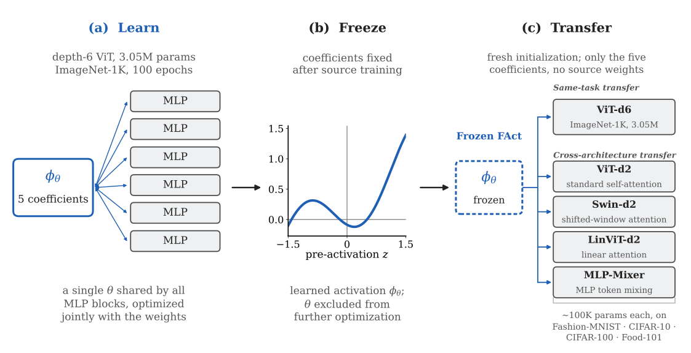
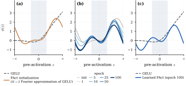
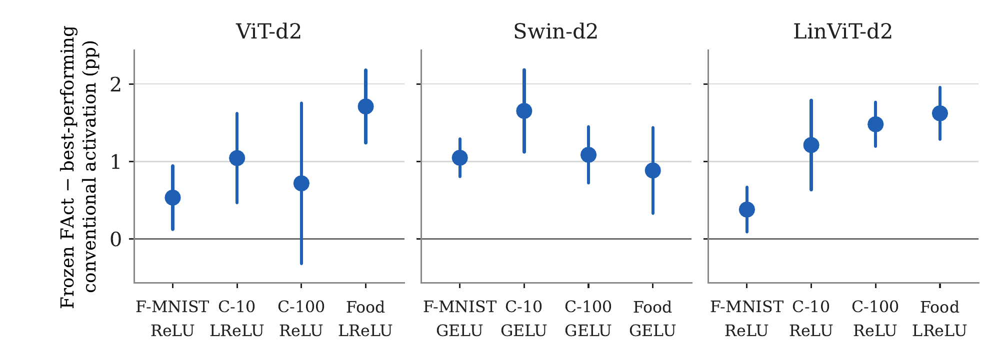
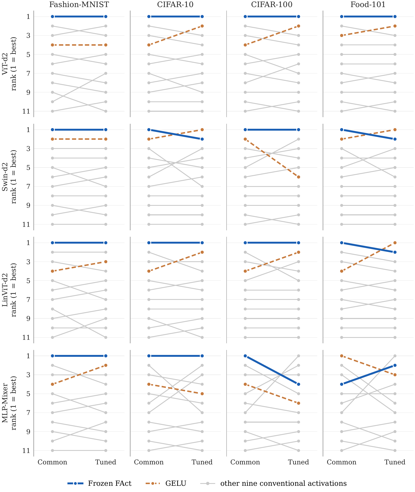
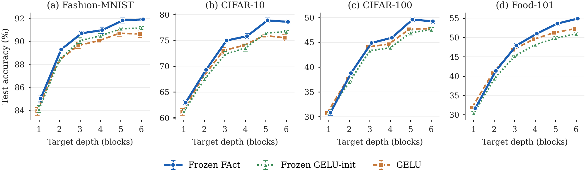

Abstract
We investigate whether a learned nonlinearity can be reused independently of the network in which it was optimized. We introduce a learn–freeze–transfer framework in which a globally shared activation is learned jointly with a source network, frozen after training, and transferred to independently initialized target networks without transferring the source-network weights. We instantiate this framework with FAct, a five-parameter activation represented by a two-harmonic truncated Fourier series and initialized using a Fourier approximation of GELU. FAct is learned in a Vision Transformer trained on ImageNet-1K, and its learned coefficients are transferred to four independently initialized architectures: a standard Vision Transformer, a Swin Transformer, a Vision Transformer with linear attention, and an MLP-Mixer. The target networks are evaluated on Fashion-MNIST, CIFAR-10, CIFAR-100, and Food-101. We compare Frozen FAct with ten conventional activation functions. Under a common training configuration, Frozen FAct achieves the highest mean test accuracy among the eleven activation choices in 15 of the 16 architecture–dataset combinations. These findings provide empirical evidence that a globally shared nonlinearity learned within one network can be reused across independently initialized networks without transferring the source-network weights.
1 Introduction
Activation functions determine how intermediate representations are transformed in neural networks and can influence both optimization and predictive performance. Conventional choices such as ReLU[1], GELU[2], and SiLU[3] impose predefined nonlinear transformations, whereas learnable activation functions allow the nonlinearity to adapt jointly with network parameters[4, 5, 6]. However, these approaches are generally evaluated within the networks in which their activation parameters are learned. This raises a related question: can a learned activation retain its usefulness when separated from the network weights with which it was optimized?
The transferability of a learned activation depends in part on how its parameters are represented and shared within a network. Existing approaches may assign activation parameters to individual neurons, channels, or layers, allowing the nonlinear transformation to adapt at different network locations[4, 5, 7, 8, 9]. Global parameter sharing instead uses a common set of parameters across multiple layers, defining a single activation function throughout the network. Prior work has explored this approach using globally shared adaptive slopes[10] and shared rational parameterizations[11]. However, sharing an activation within a network and transferring it independently of that network are distinct properties. The former establishes a common nonlinearity, whereas the latter examines whether the learned function remains useful after the source network is discarded.
Recent work has also investigated learned activation functions as reusable components. Teney et al.[12] employ bilevel meta-learning to discover activation functions suited to different task distributions and examine their transfer across related tasks. We investigate a complementary setting in which a globally shared activation is learned jointly with a single source network through conventional end-to-end training, rather than meta-learned across multiple task episodes. After source training, the learned activation is frozen and transferred to independently initialized target networks without reusing the source-network weights (Figure 1). This setting allows us to examine whether a nonlinearity learned within one network remains useful across different architectures and target tasks.
To investigate this setting, we use FAct (Fourier Activation), a globally shared learnable nonlinearity parameterized by a truncated Fourier series with two harmonics and five learnable coefficients. A single set of coefficients is shared across all MLP blocks of the source network, making the number of activation parameters independent of network depth and width. The coefficients are initialized using a two-harmonic Fourier approximation of GELU and optimized jointly with the source-network weights. This initialization provides a reference shape while allowing the activation function to adapt during source training.

We evaluate the transferability of FAct in two settings. First, we examine same-task transfer by using the source-learned activation in a freshly initialized Vision Transformer[13] of the same depth, trained on ImageNet-1K[14]. We then investigate cross-architecture transfer by transferring the same five frozen coefficients to four independently initialized target architectures: a depth-2 Vision Transformer with global self-attention, a Swin Transformer with shifted-window self-attention[15], a Vision Transformer with linear attention[16], and an attention-free MLP-Mixer[17]. In all cases, the target-network weights are trained from scratch, while the transferred activation coefficients remain fixed. The cross-architecture experiments are conducted on four datasets: Fashion-MNIST[18], CIFAR-10, CIFAR-100[19], and Food-101[20]. This evaluation examines whether the source-learned nonlinearity remains useful across different network architectures, attention mechanisms, and target tasks.
Under a common target-training configuration, Frozen FAct achieves the highest mean test accuracy among eleven activation choices in 15 of the 16 architecture–dataset combinations. To examine whether this result depends on the use of common hyperparameters, we further evaluate all activation functions using activation-specific learning-rate and weight-decay tuning under an identical search budget. Following this tuning, Frozen FAct ranks first in 11 combinations, second in four, and fourth in the one remaining combination. These results provide empirical evidence that a globally shared nonlinearity learned within a source network can remain useful across independently initialized architectures and tasks, even when activation-specific hyperparameter optimization is considered.
This work makes three contributions:
- A learn–freeze–transfer framework for shared activations. We formulate a framework in which a globally shared nonlinearity is learned jointly with a source network and subsequently transferred to independently initialized target networks without transferring source-network weights or updating the activation parameters.
- A compact Fourier-based activation parameterization. We introduce FAct, a five-parameter activation represented by a two-harmonic truncated Fourier series and shared across the MLP blocks of a network. Its parameter count remains independent of network depth and width.
- An empirical evaluation of activation transferability. We evaluate the proposed approach through same-task and cross-architecture transfer experiments, using three transformer architectures and an attention-free MLP-Mixer across four image-classification datasets. We compare Frozen FAct against ten conventional activation functions under both common and activation-specific hyperparameter configurations.
2 Background and Related Work
2.1 Learnable and Globally Shared Activation Functions
Learnable activation functions introduce parameterized nonlinear transformations whose parameters are optimized jointly with network weights. Existing approaches differ in both their functional representations and the flexibility they provide. PReLU learns the slope of the negative input region[4], while ACON introduces a more flexible parametric activation formulation[8]. Padé activation units represent nonlinear transformations using ratios of polynomials[5], whereas other approaches employ adaptive piecewise-linear functions and kernel-based representations to provide greater functional flexibility[6, 7].
Beyond the choice of functional representation, activation parameters can also differ in their sharing granularity. They may be assigned locally to individual neurons or layers, or shared across multiple layers. Jagtap et al.[10] introduced globally adaptive activation functions using a shared trainable scaling parameter that adjusts the activation slope across the network. More recently, Delfosse et al.[11] proposed joint-rational activations, sharing a common set of rational-function parameters across layers to regulate activation plasticity in deep reinforcement learning. These approaches demonstrate the utility of sharing activation parameters within a network. However, sharing alone does not establish whether a learned nonlinear function can be separated from its source network and reused in an independently initialized model.
2.2 Transferability of Learned Activation Functions
The transferability of learned activation functions has been investigated by Teney et al.[12], who proposed a bilevel meta-learning approach to discover activation functions that induce task-appropriate inductive biases. Their method employs episodic training to optimize activation functions for generalization across different task instances. They demonstrate positive transfer across 22 algorithmic tasks and investigate the reuse of learned activations across networks of different widths. This work establishes that learned nonlinearities can serve as reusable components rather than being restricted to the networks in which they are initially learned.
The present study investigates a different learning and transfer regime. Rather than meta-learning activation functions across multiple task episodes, we learn a single globally shared activation jointly with a source Vision Transformer through conventional end-to-end training on ImageNet-1K. After source training, the learned activation is frozen and transferred, without modification, to independently initialized target networks. No source-network weights are reused, and the activation parameters are not updated during target training. We evaluate this approach across transformer architectures with different attention mechanisms and an attention-free MLP-Mixer, using four image-classification datasets. Thus, our focus is on whether an activation learned through conventional source-network training can retain its usefulness when separated from the source weights and reused across independently trained architectures and tasks.
3 FAct: Learning and Transferring a Shared Nonlinearity
3.1 Global Activation Sharing
Let denote the pre-activation at the -th activation site in a network, and let denote a parameterized activation function. In FAct, a single parameter vector is shared across all MLP blocks of the network:
where denotes the number of activation sites and is the corresponding activation output. The same parameter vector is used at every site, without replication across layers or hidden units.
Because the activation parameters are shared, their gradients aggregate contributions from all activation sites during training:
where denotes the network training objective. Each term represents the gradient contribution propagated through an individual activation site. Consequently, the shared activation parameters are optimized using signals from all MLP blocks rather than through independently learned, layer-specific parameter sets.
Global sharing defines a single parameterized nonlinear function that can be retained independently of the source-network weights. We refer to FAct while its parameters are jointly optimized with the source-network weights as Learnable FAct. After source training, the parameters are frozen, and the resulting activation is referred to as Frozen FAct.
3.2 Fourier Parameterization and Initialization
We parameterize FAct using a truncated Fourier series:
where , , and are learnable coefficients, and denotes the number of harmonics. We fix the angular frequency to , giving the activation a period of . The parameter vector is defined as
containing coefficients. In the main experiments, we set , resulting in five learnable parameters shared across the entire network. Consequently, the number of activation parameters is independent of network depth and width.
The Fourier representation provides a compact and smooth parameterization whose shape can adapt during training. Depending on the learned coefficients, the resulting function can exhibit monotonic or non-monotonic behaviour over the input range of interest. Furthermore, its output is bounded for any finite coefficient values:
This bound follows from the bounded magnitudes of the sine and cosine functions.
We initialize FAct using a two-harmonic Fourier approximation of GELU[2]. For a reference activation function , the Fourier coefficients are obtained by projection over one period, :
For , , and , the resulting initialization is
This initialization provides a reference nonlinear transformation while allowing all five coefficients to adapt during source-network training.
3.3 Learn-Freeze-Transfer Protocol
The globally shared parameterization allows the learned activation to be separated from the source network and reused independently. During source training, the source-network weights and shared activation parameters are jointly optimized:
where denotes the source-network weights, represents the shared activation parameters, and is the source-task training objective. The resulting activation is
After source training, the learned activation parameters are frozen. Only these parameters are transferred to a target network; the source-network weights are not transferred. Let denote the weights of an independently initialized target network, and let denote its training objective. Target training then optimizes
Thus, the target-network weights are optimized for the target task while the transferred activation parameters remain unchanged throughout training. No source-network weights are used to initialize the target model, and target-task gradients do not update the transferred activation.
This protocol isolates the reuse of the learned nonlinearity from the transfer of network weights. It therefore enables us to examine whether an activation learned jointly with one source network remains useful when incorporated into independently initialized networks, without further adaptation of the activation itself. Figure 1 illustrates the three stages of this process.
4 Experimental Evaluation
This section evaluates whether a globally shared activation learned jointly with a source network remains useful when transferred to independently initialized target networks. We first describe the source and target architectures, datasets, and training protocol. We then examine the evolution of the source-learned activation, its transfer to a network with the same architecture and task, and its transfer across four target architectures with different attention and token-mixing mechanisms. Frozen FAct is compared with ten conventional activation functions to assess its performance under a common training configuration.
4.1 Experimental Setup
Source and target networks. We learn FAct in a depth-6 Vision Transformer (ViT-d6) trained on ImageNet-1K[14]. The source network contains parameters, and learning FAct adds five trainable activation coefficients, resulting in trainable parameters. The same five coefficients are shared across all MLP blocks of the source network.
After source training, the learned activation is transferred to four independently initialized target architectures: a depth-2 Vision Transformer (ViT-d2) with global self-attention, a depth-2 Swin Transformer (Swin-d2) with shifted-window self-attention[15], a depth-2 Vision Transformer with linear attention (LinViT-d2)[16], and a depth-2 MLP-Mixer[17]. These target networks contain approximately 100K parameters, with their exact configurations provided in Appendix A. No source-network weights are transferred, and the activation coefficients remain fixed throughout target training.
Datasets and transferred activation. Each target architecture is evaluated on Fashion-MNIST[18], CIFAR-10, CIFAR-100[19], and Food-101[20]. All target experiments use the same frozen activation coefficients obtained from the seed-1 source checkpoint: , , , , and . Thus, the same source-learned activation is used across all target architectures and datasets.
Training and evaluation protocol. All target experiments use five random seeds, with the same seed configurations across architectures, datasets, and activation choices. Models are trained for 100 epochs using AdamW, with a learning rate of , weight decay of , and a batch size of 256. The learning-rate schedule consists of five epochs of linear warm-up followed by cosine decay. Label smoothing and dropout are both set to . All activation choices use identical dataset-specific preprocessing and augmentation, without test-time augmentation. The complete preprocessing and augmentation procedures are provided in Appendix A.
Frozen FAct is compared with ten conventional activation functions: ReLU[1], LeakyReLU[21], GELU[2], SiLU[3], Mish[22], HardSwish[23], Softplus[24], ELU[25], SELU[26], and Tanh[27]. For each run, the checkpoint with the highest validation accuracy is selected and evaluated once on the held-out test set. Results are reported as mean and sample standard deviation across five seeds. Activation-specific learning-rate and weight-decay tuning results are provided in Appendix B.
4.2 Evolution of the Source-Learned Activation
FAct is initialized using a two-harmonic Fourier approximation of GELU, with all five coefficients subsequently optimized jointly with the source-network weights. Figure 2 illustrates the evolution of the shared activation during ImageNet-1K training. The activation progressively departs from its initial GELU approximation and develops a non-monotonic shape over the course of training. The final learned function, obtained after 100 epochs, differs substantially from its initialization and is the activation frozen and transferred to all target networks in the subsequent experiments.

4.3 Same-Task Transfer at Source Scale
To examine whether the learned activation remains useful when transferred to a network with the same architecture and task, we train a freshly initialized ViT-d6 on ImageNet-1K using the frozen FAct activation learned by the source network. The five activation coefficients are obtained from the seed-1 source checkpoint and remain fixed throughout target training. No source-network weights are transferred. We conduct five independent target runs, all using the same frozen activation, so the reported variation reflects differences in target initialization and training rather than variability across independently learned activations.
Table 1. Same-task transfer on ImageNet-1K using a freshly initialized ViT-d6. Results report top-1 accuracy (%) on the ILSVRC validation set as mean sample standard deviation across five target runs. Frozen FAct uses the activation coefficients learned by the source network; source-network weights are not transferred, and activation coefficients remain fixed. denotes the difference in mean accuracy relative to GELU, in percentage points.
| Activation | Top-1 accuracy (%) | vs GELU (pp) |
|---|---|---|
| GELU | 62.45 0.13 | — |
| Frozen FAct | 63.91 0.15 |
Table 1 compares Frozen FAct with GELU under the same architecture and training configuration. Frozen FAct achieves a mean top-1 accuracy of , compared with for GELU, an improvement of percentage points. This result provides evidence that the source-learned activation retains useful properties even when separated from its original network weights and reused in an independently initialized network performing the same task.
4.4 Transfer Across Transformer Architectures
Tables 2–4 report the test accuracy of the eleven activation choices on ViT-d2, Swin-d2, and LinViT-d2, respectively, under the common training configuration. Table 5 summarizes the performance difference between Frozen FAct and the best-performing conventional activation for each target–dataset combination, while Figure 3 illustrates the corresponding accuracy margins.
Table 2. Transfer performance on ViT-d2 with global self-attention under the common training configuration. Results are mean test accuracy (%) sample standard deviation across five seeds. Bold and underlining indicate the highest and second-highest mean accuracies, respectively.
| Activation | Fashion-MNIST | CIFAR-10 | CIFAR-100 | Food-101 |
|---|---|---|---|---|
| Frozen FAct | 90.94 0.10 | 75.56 0.35 | 47.67 0.48 | 35.83 0.36 |
| ReLU | 90.40 0.46 | 74.50 0.46 | 46.95 0.63 | 34.07 0.22 |
| LeakyReLU | 90.27 0.27 | 74.51 0.26 | 46.80 0.21 | 34.12 0.21 |
| GELU | 89.09 0.24 | 72.46 0.29 | 46.30 0.24 | 34.10 0.39 |
| SiLU | 87.96 0.57 | 70.47 0.39 | 44.60 0.34 | 32.51 0.54 |
| Mish | 87.91 0.35 | 70.62 0.49 | 44.85 0.31 | 32.69 0.32 |
| HardSwish | 87.53 0.58 | 68.01 0.15 | 42.13 0.33 | 31.10 0.72 |
| Softplus | 86.27 0.37 | 68.51 0.41 | 40.44 0.80 | 31.84 0.22 |
| ELU | 86.32 0.09 | 66.25 0.19 | 38.44 0.68 | 29.36 0.57 |
| SELU | 86.24 0.51 | 65.29 0.50 | 37.12 0.26 | 28.71 0.24 |
| Tanh | 86.61 0.20 | 65.14 0.32 | 37.24 0.20 | 28.67 0.40 |
Table 3. Transfer performance on Swin-d2 with shifted-window self-attention under the common training configuration. Results are mean test accuracy (%) sample standard deviation across five seeds. Bold and underlining indicate the highest and second-highest mean accuracies, respectively.
| Activation | Fashion-MNIST | CIFAR-10 | CIFAR-100 | Food-101 |
|---|---|---|---|---|
| Frozen FAct | 89.33 0.11 | 69.47 0.31 | 38.34 0.34 | 41.32 0.26 |
| ReLU | 88.28 0.28 | 67.31 0.33 | 36.87 0.44 | 39.20 0.55 |
| LeakyReLU | 88.27 0.15 | 67.56 0.41 | 36.85 0.31 | 39.20 0.37 |
| GELU | 88.29 0.22 | 67.82 0.31 | 37.25 0.27 | 40.43 0.38 |
| SiLU | 87.69 0.18 | 66.21 0.35 | 36.48 0.44 | 39.01 0.54 |
| Mish | 87.60 0.09 | 66.44 0.32 | 36.97 0.68 | 39.34 0.32 |
| HardSwish | 87.33 0.24 | 65.60 0.27 | 36.14 0.32 | 38.17 0.75 |
| Softplus | 85.73 0.27 | 62.61 0.26 | 32.39 0.40 | 35.67 0.82 |
| ELU | 85.55 0.39 | 61.03 0.65 | 31.55 0.35 | 32.66 0.58 |
| SELU | 83.27 0.40 | 54.81 0.68 | 25.71 0.29 | 28.75 0.43 |
| Tanh | 85.69 0.37 | 57.63 0.90 | 28.06 0.41 | 30.35 0.43 |
Table 4. Transfer performance on LinViT-d2 with linear attention under the common training configuration. Results are mean test accuracy (%) sample standard deviation across five seeds. Bold and underlining indicate the highest and second-highest mean accuracies, respectively.
| Activation | Fashion-MNIST | CIFAR-10 | CIFAR-100 | Food-101 |
|---|---|---|---|---|
| Frozen FAct | 90.67 0.24 | 75.15 0.38 | 48.05 0.19 | 36.12 0.34 |
| ReLU | 90.29 0.16 | 73.94 0.48 | 46.57 0.36 | 34.40 0.27 |
| LeakyReLU | 90.18 0.23 | 73.89 0.30 | 46.35 0.29 | 34.50 0.29 |
| GELU | 89.07 0.22 | 72.13 0.31 | 45.47 0.32 | 33.88 0.63 |
| SiLU | 87.89 0.52 | 70.05 0.31 | 43.29 0.46 | 32.49 0.13 |
| Mish | 88.06 0.25 | 70.23 0.28 | 43.66 0.63 | 32.70 0.17 |
| HardSwish | 87.15 0.40 | 68.35 0.47 | 41.16 0.62 | 31.35 0.31 |
| Softplus | 85.48 0.26 | 64.30 0.98 | 38.58 0.48 | 31.47 0.28 |
| ELU | 86.02 0.24 | 65.63 0.87 | 37.09 0.24 | 29.24 0.34 |
| SELU | 85.95 0.43 | 65.07 0.62 | 35.56 0.55 | 27.91 0.38 |
| Tanh | 86.28 0.50 | 64.85 0.88 | 35.57 0.51 | 28.04 0.11 |
Table 5. Frozen FAct compared with the best-performing conventional activation across the twelve transformer architecture–dataset combinations under the common training configuration. The best conventional activation is selected from the ten baseline functions, excluding Frozen FAct. Accuracy values are mean test accuracy (%). denotes the seed-matched mean accuracy difference between Frozen FAct and the selected conventional activation, in percentage points, across five seeds.
| Target | Dataset | Frozen FAct | Best-performing conventional activation | (pp) |
|---|---|---|---|---|
| ViT-d2 | Fashion-MNIST | 90.94 | ReLU (90.40) | |
| CIFAR-10 | 75.56 | LeakyReLU (74.51) | ||
| CIFAR-100 | 47.67 | ReLU (46.95) | ||
| Food-101 | 35.83 | LeakyReLU (34.12) | ||
| Swin-d2 | Fashion-MNIST | 89.33 | GELU (88.29) | |
| CIFAR-10 | 69.47 | GELU (67.82) | ||
| CIFAR-100 | 38.34 | GELU (37.25) | ||
| Food-101 | 41.32 | GELU (40.43) | ||
| LinViT-d2 | Fashion-MNIST | 90.67 | ReLU (90.29) | |
| CIFAR-10 | 75.15 | ReLU (73.94) | ||
| CIFAR-100 | 48.05 | ReLU (46.57) | ||
| Food-101 | 36.12 | LeakyReLU (34.50) |

Across the three transformer architectures and four datasets, Frozen FAct achieves the highest mean test accuracy in all twelve architecture–dataset combinations. Its improvement over the best-performing conventional activation ranges from percentage points on LinViT-d2 with Fashion-MNIST to percentage points on ViT-d2 with Food-101. The strongest conventional baseline varies across architectures: ReLU or LeakyReLU provides the highest mean accuracy among conventional activations for ViT-d2 and LinViT-d2, whereas GELU performs best across all four Swin-d2 datasets. Importantly, the same five activation coefficients learned by the source ViT-d6 are used in all target experiments, without transferring source-network weights or updating the activation during target training. These results provide empirical evidence that a globally shared nonlinearity learned within one network can retain its usefulness across independently initialized transformer architectures with different attention configurations and target tasks.
Additional analyses examine transfer using a globally shared Padé activation (Appendix C) and investigate the effect of the GELU-based initialization and of target-network depth in Swin targets (Appendix D).
4.5 Transfer to an MLP-Mixer Architecture
To examine whether the learned activation transfers beyond attention-based architectures, we evaluate Frozen FAct in an independently initialized depth-2 MLP-Mixer[17]. Unlike the transformer architectures, MLP-Mixer uses separate MLPs for token mixing and channel mixing, without self-attention. We transfer the same five source-learned activation coefficients to both types of MLP blocks and keep them fixed throughout target training. The comparison includes the same ten conventional activation functions under the common training configuration.
Table 6. Transfer performance on MLP-Mixer under the common training configuration. Mean test accuracy (%) sample s.d. across five seeds. Bold indicates the highest mean test accuracy for each dataset, and underlining indicates the second-highest. The comparison includes Frozen FAct and the same ten conventional activation functions as Tables 2–4.
| Activation | Fashion-MNIST | CIFAR-10 | CIFAR-100 | Food-101 |
|---|---|---|---|---|
| Frozen FAct | 91.42 0.18 | 75.99 0.16 | 47.49 0.38 | 35.09 0.22 |
| ReLU | 90.80 0.22 | 75.47 0.35 | 47.08 0.46 | 34.92 0.35 |
| LeakyReLU | 90.64 0.39 | 75.51 0.13 | 47.20 0.48 | 34.94 0.40 |
| GELU | 89.84 0.13 | 75.32 0.48 | 45.99 0.60 | 36.15 0.47 |
| SiLU | 88.90 0.29 | 73.75 0.30 | 45.07 0.83 | 35.15 0.30 |
| Mish | 88.94 0.25 | 74.03 0.30 | 45.17 0.58 | 35.25 0.25 |
| HardSwish | 87.81 0.41 | 72.78 0.42 | 44.05 0.78 | 34.39 0.26 |
| Softplus | 86.98 0.42 | 68.26 1.06 | 35.33 1.84 | 32.70 0.12 |
| ELU | 86.52 0.22 | 70.19 0.56 | 41.27 0.78 | 30.82 0.38 |
| SELU | 86.02 0.22 | 64.97 0.22 | 36.07 0.46 | 24.90 0.25 |
| Tanh | 86.53 0.18 | 65.42 0.56 | 36.19 0.43 | 29.97 0.29 |
Frozen FAct achieves the highest mean test accuracy on Fashion-MNIST, CIFAR-10, and CIFAR-100, outperforming the best-performing conventional activation by , , and percentage points, respectively (Table 6). On Food-101, GELU performs better by approximately percentage points. These results provide evidence that a source-learned activation can also be reused in an attention-free architecture without transferring source-network weights or updating its coefficients, although its performance advantage varies across datasets. After activation-specific hyperparameter tuning, Frozen FAct retains its advantage on Fashion-MNIST and CIFAR-10, whereas HardSwish performs better on CIFAR-100 and Food-101.
5 Conclusion
This work investigated whether a globally shared activation learned jointly with a source network can be reused independently of the network weights with which it was optimized. We introduced a learn–freeze–transfer framework and instantiated it using FAct, a five-parameter activation represented by a two-harmonic truncated Fourier series. Initialized using a Fourier approximation of GELU, its coefficients are optimized jointly with a source Vision Transformer and subsequently frozen for transfer to independently initialized target networks.
We evaluated the proposed approach through same-task and cross-architecture transfer experiments. In the same-task setting, Frozen FAct improved ImageNet-1K top-1 accuracy by percentage points over GELU when used in a freshly initialized ViT-d6. Across four target architectures and four image-classification datasets, Frozen FAct achieved the highest mean test accuracy among eleven activation choices in 15 of the 16 architecture–dataset combinations under a common training configuration. This included all twelve combinations involving the three transformer architectures and three of four MLP-Mixer combinations. Following activation-specific hyperparameter tuning, Frozen FAct ranked first in eleven combinations, second in four, and fourth in the remaining combination. Throughout these experiments, only the five learned activation coefficients were transferred; source-network weights were not reused, and the activation remained fixed during target training.
These findings provide empirical evidence that a globally shared nonlinearity learned within one network can retain its usefulness when transferred to independently initialized networks with different architectures and target tasks. However, the evaluation uses a single source-learned activation obtained from one Vision Transformer trained on ImageNet-1K, and the cross-architecture experiments are restricted to relatively small target networks and image-classification tasks. Further investigation is needed to establish how activation transferability varies across source architectures, source training datasets, model scales, and target tasks. Extending this evaluation to convolutional and other network architectures would help determine the broader applicability of transferable learned nonlinearities.
Appendix A: Experimental Configuration
A.1 Models and datasets
The source model is a depth-6 Vision Transformer (ViT-d6) trained on ImageNet-1K, with FAct shared across its six MLP blocks. The target models comprise three depth-2 transformer architectures and a depth-2 MLP-Mixer. ViT-d2 uses global softmax self-attention, Swin-d2 employs shifted-window self-attention with a window size of four, and LinViT-d2 replaces softmax attention with linear attention using . The MLP-Mixer consists of two blocks, each containing a pre-normalized residual token-mixing MLP (hidden width 38) followed by a pre-normalized residual channel-mixing MLP (hidden width 304), with an embedding width of 76. It does not use attention, a class token, or positional embeddings, and classification is performed using globally average-pooled tokens.
All MLPs use the same Linear–activation–dropout–Linear structure, with a single activation module shared across the MLPs within each network. Table 7 summarizes the architectural configurations and parameter counts.
The target models are trained on Fashion-MNIST (), CIFAR-10 and CIFAR-100 (), and Food-101 (resized to ). For each dataset, training images are held out once using a fixed random seed to form a validation split shared across all runs. The official test sets, comprising images for Fashion-MNIST and the CIFAR datasets and images for Food-101, are reserved for final evaluation.
A.2 Training configuration
All target networks are trained for 100 epochs with AdamW, a batch size of 256, a five-epoch linear warm-up followed by cosine decay, label smoothing of and dropout of . The common configuration uses a learning rate of and weight decay of for every activation; activation-specific tuning is described in Appendix B. The source model uses the same optimizer, schedule and regularization. The transferred coefficients are those of the seed-1 source run (Section 4.1 and Figure 2).
A.3 Preprocessing and evaluation
Inputs are normalized per channel with the training-split mean and standard deviation. During training, each image is zero-padded by 2 pixels (Fashion-MNIST) or 4 pixels (other datasets), randomly cropped back to its original size and flipped horizontally with probability ; validation and test images are only normalized. For each run, the checkpoint with the highest validation accuracy is evaluated once on the test set. Each result is the mean and sample standard deviation over five seeds, using the same seeds for every activation.
Table 7. Architectural and training configurations of the source and target networks. Parameter ranges reflect differences across the four target datasets.
| Source | Targets | ||||
|---|---|---|---|---|---|
| ViT-d6 | ViT-d2 | Swin-d2 | LinViT-d2 | MLP-Mixer | |
| Token mixing | global softmax | global softmax | shifted window (4) | linear, | MLP |
| Depth / width / heads | 6 / 192 / 6 | 2 / 64 / 4 | 2 / 64 / 4 | 2 / 64 / 4 | 2 / 76 / – |
| MLP hidden width | 768 | 256 | 256 | 256 | 38 token / 304 channel |
| Patch size | 16 | 4 (Food-101: 8) | 4 | 4 (Food-101: 8) | 4 (Food-101: 8) |
| Parameters | 3,048,232 | 105,098–123,237 | 102,354–110,317 | 105,098–123,237 | 103,620–126,313 |
| Activation coefficients | 5, learned | 5, frozen (not updated) | |||
| Data | ImageNet-1K, | Fashion-MNIST , CIFAR-10/100 , Food-101 | |||
| Validation split | 10,000 train images | 5,000 train images per dataset, fixed | |||
| Test split | ILSVRC val (50,000) | official test set | |||
| Seeds | 1 learns FAct; 5 in Section 4.3 | 5 per activation | |||
| Optimizer / batch / epochs | AdamW / 256 / 100 | ||||
| Learning rate / weight decay | / (common configuration; per-activation in Appendix B) | ||||
| Schedule | 5-epoch linear warm-up, then cosine decay | ||||
| Label smoothing / dropout | / | ||||
| Checkpoint | best validation accuracy, evaluated once on the test set | ||||
Appendix B: Activation-Specific Hyperparameter Tuning
The main experiments use a common learning rate and weight decay for all activation functions. To examine whether this configuration favours Frozen FAct, we perform activation-specific hyperparameter tuning using an identical search budget. The learning rate and weight decay are selected independently for each activation–architecture–dataset combination. The search considers five learning rates (, , , , and ) and three weight-decay values (, , and ), resulting in fifteen configurations per combination. Each configuration is evaluated using a 30-epoch, single-seed proxy experiment. The selected configuration is subsequently trained for 100 epochs across five random seeds. This procedure is applied to all eleven activation choices across the four target architectures and four datasets.
Table 8. Frozen FAct compared with the best-performing conventional activation under activation-specific hyperparameter tuning. Results are mean test accuracy (%) sample standard deviation across five seeds for both Frozen FAct and the best-performing conventional activation. denotes the difference in mean accuracy between Frozen FAct and the selected conventional activation, in percentage points.
| Best-performing conventional | |||||
|---|---|---|---|---|---|
| Target | Dataset | Frozen FAct | Activation | Accuracy | (pp) |
| ViT-d2 | Fashion-MNIST | 91.17 0.17 | LeakyReLU | 90.69 0.31 | |
| CIFAR-10 | 76.34 0.69 | GELU | 74.91 0.13 | ||
| CIFAR-100 | 48.33 0.48 | GELU | 47.06 0.30 | ||
| Food-101 | 39.15 0.49 | GELU | 37.13 0.41 | ||
| Swin-d2 | Fashion-MNIST | 90.51 0.23 | GELU | 90.13 0.17 | |
| CIFAR-10 | 72.57 0.57 | GELU | 73.07 0.22 | ||
| CIFAR-100 | 44.13 0.54 | LeakyReLU | 42.18 0.59 | ||
| Food-101 | 46.51 0.40 | GELU | 46.60 0.86 | ||
| LinViT-d2 | Fashion-MNIST | 91.39 0.15 | ReLU | 90.76 0.27 | |
| CIFAR-10 | 76.38 0.45 | GELU | 74.44 0.44 | ||
| CIFAR-100 | 48.51 0.41 | GELU | 48.18 0.36 | ||
| Food-101 | 38.34 0.25 | GELU | 38.70 0.64 | ||
| MLP-Mixer | Fashion-MNIST | 91.69 0.15 | GELU | 90.93 0.29 | |
| CIFAR-10 | 77.89 0.66 | SiLU | 77.70 0.44 | ||
| CIFAR-100 | 49.01 0.56 | HardSwish | 51.48 0.91 | ||
| Food-101 | 42.48 0.10 | HardSwish | 43.27 1.21 | ||
Table 8 summarizes the comparison between Frozen FAct and the best-performing conventional activation after activation-specific hyperparameter tuning. Frozen FAct retains the highest mean accuracy in eleven of the sixteen architecture–dataset combinations, ranks second in four, and ranks fourth in the remaining combination.
Across the transformer architectures, Frozen FAct ranks first in nine of the twelve combinations. GELU achieves the highest mean accuracy in the remaining three, displacing Frozen FAct to second place. For the MLP-Mixer, Frozen FAct retains the highest rank on Fashion-MNIST and CIFAR-10, whereas HardSwish performs better on CIFAR-100 and Food-101. Figure 4 illustrates the changes in activation rankings between the common and tuned configurations.
These results show that the relative performance of activation functions depends partly on target architecture and dataset. Nevertheless, Frozen FAct retains the highest mean accuracy in most evaluated combinations, even when conventional activation functions receive activation-specific hyperparameter optimization.

Appendix C: Transfer with a Shared Rational Activation
To examine whether activation transfer is specific to the Fourier parameterization, we use a globally shared Padé Activation Unit (PAU)[5], represented by a degree- rational function with ten learnable coefficients shared across the six MLP blocks of ViT-d6. After source training on ImageNet-1K, the learned coefficients are frozen and transferred to an independently initialized ViT-d2 using the same transfer protocol as Frozen FAct. Only the activation coefficients are transferred; no source-network weights are reused.
Table 9. Transfer performance of a globally shared Padé activation on ViT-d2 under the common training configuration. Results are mean test accuracy (%) sample standard deviation across six seeds. Frozen PAU, Frozen FAct, and GELU are evaluated in separate matched comparisons, with all three conditions for each dataset run on the same hardware. Values for Frozen FAct and GELU may therefore differ slightly from those reported in Table 2. Bold indicates the highest mean accuracy for each dataset.
| Dataset | Frozen PAU | Frozen FAct | GELU |
|---|---|---|---|
| Fashion-MNIST | 91.05 0.28 | 90.89 0.14 | 89.03 0.48 |
| CIFAR-10 | 76.03 0.45 | 75.65 0.46 | 72.67 0.51 |
| CIFAR-100 | 48.21 0.39 | 47.79 0.52 | 46.35 0.25 |
| Food-101 | 36.67 0.23 | 35.80 0.40 | 34.00 0.32 |
Both globally shared learned parameterizations achieve higher mean accuracy than GELU across all four datasets (Table 9). Frozen PAU also achieves higher mean accuracy than Frozen FAct, with improvements ranging from to percentage points. These results provide supplementary evidence that activation transfer is not restricted to the Fourier representation. However, this comparison is limited to one target architecture and does not establish equivalent transfer performance across other architectures.
Appendix D: Depth Sensitivity and the Effect of GELU-Based Initialization
We conduct an additional experiment to investigate two aspects of activation transfer: the effect of using a fixed Fourier approximation of GELU instead of the conventional GELU activation, and the sensitivity of transfer performance to target-network depth. For this analysis, we use Swin Transformer targets because GELU is the highest-performing conventional activation on all four datasets in the main Swin experiments (Table 3). This provides a single, consistent reference for evaluating the two frozen Fourier-based activations across datasets. The conclusions of this appendix therefore apply to the evaluated Swin targets and are not claimed for all architectures.
D.1 Experimental Design
We vary the depth of the target Swin Transformer from one to six blocks while keeping the remaining architectural and training configurations fixed. All blocks belong to a single stage with embedding dimension 64, four attention heads, MLP ratio 4, patch size 4 and window size 4. Blocks alternate between regular-window and shifted-window attention, beginning with a regular-window block followed by a shifted-window block with a shift of two tokens, so the depth-one model contains only a regular-window block. No patch merging is applied, so the token grid is identical at every depth and only the number of blocks, and hence the number of activation call sites, changes.
Three activation configurations are compared: (1) GELU, used as the conventional reference; (2) Frozen GELU-init, the two-harmonic Fourier approximation of GELU initialized as described in Eq. 7, with its coefficients kept fixed throughout target training; and (3) Frozen FAct, which uses the coefficients learned by the ImageNet-1K source ViT and transferred without further updates. In both frozen configurations, no source-network weights are transferred. All target networks are independently initialized and trained with five seeds using the common training configuration described in Appendix A. For each dataset and depth, all three configurations were trained on the same GPU type.
Table 10. Test accuracy across Swin Transformer target depths. Results are mean accuracy (%) sample standard deviation across five seeds. The three configurations are GELU, Frozen GELU-init and Frozen FAct. Bold indicates the highest mean accuracy at each dataset–depth combination.
| Dataset | Depth | GELU | Frozen GELU-init | Frozen FAct |
|---|---|---|---|---|
| Fashion-MNIST | 1 | 83.93 0.35 | 84.10 0.32 | 85.03 0.30 |
| 2 | 88.28 0.18 | 88.41 0.20 | 89.30 0.06 | |
| 3 | 89.65 0.26 | 90.07 0.24 | 90.71 0.13 | |
| 4 | 90.06 0.06 | 90.49 0.18 | 90.98 0.26 | |
| 5 | 90.71 0.24 | 91.11 0.07 | 91.83 0.23 | |
| 6 | 90.66 0.33 | 91.15 0.13 | 91.92 0.13 | |
| CIFAR-10 | 1 | 61.19 0.67 | 61.27 0.39 | 62.96 0.35 |
| 2 | 67.83 0.19 | 67.47 0.35 | 69.31 0.34 | |
| 3 | 73.01 0.62 | 72.30 0.52 | 74.98 0.28 | |
| 4 | 74.05 0.39 | 73.53 0.62 | 75.82 0.47 | |
| 5 | 75.94 0.28 | 76.43 0.38 | 78.89 0.48 | |
| 6 | 75.53 0.62 | 76.68 0.25 | 78.60 0.34 | |
| CIFAR-100 | 1 | 30.72 0.42 | 30.71 0.18 | 30.80 0.48 |
| 2 | 37.61 0.35 | 37.00 0.17 | 38.78 0.40 | |
| 3 | 44.09 0.37 | 43.31 0.31 | 44.87 0.19 | |
| 4 | 44.63 0.21 | 43.91 0.29 | 45.94 0.31 | |
| 5 | 47.64 0.27 | 46.96 0.51 | 49.58 0.36 | |
| 6 | 47.78 0.47 | 47.54 0.42 | 49.25 0.40 | |
| Food-101 | 1 | 31.93 0.24 | 30.43 0.51 | 31.74 0.33 |
| 2 | 40.79 0.34 | 39.35 0.35 | 41.41 0.34 | |
| 3 | 46.85 0.16 | 45.20 0.14 | 47.95 0.55 | |
| 4 | 49.57 0.39 | 48.16 0.44 | 51.03 0.43 | |
| 5 | 51.26 0.30 | 49.85 0.44 | 53.63 0.39 | |
| 6 | 52.27 0.41 | 50.98 0.26 | 54.92 0.19 |

D.2 Results
Effect of the GELU-Based Fourier Initialization
We first compare Frozen GELU-init with GELU to examine the effect of replacing the conventional activation with its fixed two-harmonic Fourier approximation (Table 10). This approximation does not provide a consistent advantage over GELU across datasets and target depths. On Fashion-MNIST, Frozen GELU-init achieves higher mean accuracy than GELU at all six depths, by to . On CIFAR-10, it performs better at depths one, five and six, and worse at depths two to four. On CIFAR-100, it is at or below GELU at every depth, and on Food-101 GELU achieves higher mean accuracy at every depth. The performance of the fixed Fourier approximation therefore depends on the target dataset and depth rather than providing a uniform improvement over GELU.
Sensitivity to Target-Network Depth
We next examine how the performance of the transferred activation changes with target-network depth (Table 10 and Figure 5). Frozen FAct achieves the highest mean accuracy among the three configurations at every depth on Fashion-MNIST, CIFAR-10 and CIFAR-100, and at five of six depths on Food-101. On Fashion-MNIST and CIFAR-10 it outperforms GELU at every depth, by to and to respectively, and is ahead in all five seed-matched runs in each case. On CIFAR-100 and Food-101 the difference is negligible at depth one ( and ), but Frozen FAct is ahead from depth two onwards, reaching on CIFAR-100 and on Food-101, with Frozen FAct ahead in all five seed-matched runs at every depth from two to six. On CIFAR-10, CIFAR-100 and Food-101 the advantage over GELU tends to increase with depth.
Importantly, Frozen FAct also outperforms Frozen GELU-init in all 24 dataset–depth combinations, by to . Together with the previous comparison, this indicates that the advantage of Frozen FAct is not explained by replacing GELU with a fixed Fourier representation: the source-learned coefficients provide an additional benefit beyond the GELU-based initialization under the evaluated settings. Overall, the transferred activation remains useful across a range of Swin target depths, although the magnitude of its advantage depends on the dataset and depth.
References
- [1]V. Nair and G. E. Hinton. Rectified Linear Units Improve Restricted Boltzmann Machines. International Conference on Machine Learning (ICML), pp. 807–814, 2010.
- [2]D. Hendrycks and K. Gimpel. Gaussian Error Linear Units (GELUs). arXiv:1606.08415, 2016.
- [3]S. Elfwing, E. Uchibe and K. Doya. Sigmoid-Weighted Linear Units for Neural Network Function Approximation in Reinforcement Learning. Neural Networks, 107, pp. 3–11, 2018.
- [4]K. He, X. Zhang, S. Ren and J. Sun. Delving Deep into Rectifiers: Surpassing Human-Level Performance on ImageNet Classification. IEEE International Conference on Computer Vision (ICCV), pp. 1026–1034, 2015.
- [5]A. Molina, P. Schramowski and K. Kersting. Padé Activation Units: End-to-End Learning of Flexible Activation Functions in Deep Networks. International Conference on Learning Representations (ICLR), 2020.
- [6]S. Scardapane, S. Van Vaerenbergh, S. Totaro and A. Uncini. Kafnets: Kernel-Based Non-Parametric Activation Functions for Neural Networks. Neural Networks, 110, pp. 19–32, 2019.
- [7]F. Agostinelli, M. Hoffman, P. Sadowski and P. Baldi. Learning Activation Functions to Improve Deep Neural Networks. ICLR Workshop, 2015.
- [8]N. Ma, X. Zhang, M. Liu and J. Sun. Activate or Not: Learning Customized Activation. IEEE/CVF Conference on Computer Vision and Pattern Recognition (CVPR), pp. 8032–8042, 2021.
- [9]A. D. Jagtap, K. Kawaguchi and G. E. Karniadakis. Locally Adaptive Activation Functions with Slope Recovery for Deep and Physics-Informed Neural Networks. Proceedings of the Royal Society A, 476(2239), pp. 20200334, 2020.
- [10]A. D. Jagtap, K. Kawaguchi and G. E. Karniadakis. Adaptive Activation Functions Accelerate Convergence in Deep and Physics-Informed Neural Networks. Journal of Computational Physics, 404, pp. 109136, 2020.
- [11]Q. Delfosse, P. Schramowski, M. Mundt, A. Molina and K. Kersting. Adaptive Rational Activations to Boost Deep Reinforcement Learning. International Conference on Learning Representations (ICLR), Earlier version: Recurrent Rational Networks, arXiv:2102.09407, 2024.
- [12]D. Teney, L. Jiang, F. Gogianu and E. Abbasnejad. Do We Always Need the Simplicity Bias? Looking for Optimal Inductive Biases in the Wild. Proceedings of the IEEE/CVF Conference on Computer Vision and Pattern Recognition (CVPR), 2025.
- [13]A. Dosovitskiy et al. An Image Is Worth 16x16 Words: Transformers for Image Recognition at Scale. International Conference on Learning Representations (ICLR), 2021.
- [14]J. Deng, W. Dong, R. Socher, L. Li, K. Li and L. Fei-Fei. ImageNet: A Large-Scale Hierarchical Image Database. IEEE Conference on Computer Vision and Pattern Recognition (CVPR), pp. 248–255, 2009.
- [15]Z. Liu et al. Swin Transformer: Hierarchical Vision Transformer using Shifted Windows. IEEE/CVF International Conference on Computer Vision (ICCV), pp. 10012–10022, 2021.
- [16]A. Katharopoulos, A. Vyas, N. Pappas and F. Fleuret. Transformers are RNNs: Fast Autoregressive Transformers with Linear Attention. Proceedings of the 37th International Conference on Machine Learning, 119, pp. 5156–5165, 2020.
- [17]I. Tolstikhin et al. MLP-Mixer: An all-MLP Architecture for Vision. Advances in Neural Information Processing Systems, 34, pp. 24261–24272, 2021.
- [18]H. Xiao, K. Rasul and R. Vollgraf. Fashion-MNIST: A Novel Image Dataset for Benchmarking Machine Learning Algorithms. arXiv:1708.07747, 2017.
- [19]A. Krizhevsky. Learning Multiple Layers of Features from Tiny Images. University of Toronto, 2009.
- [20]L. Bossard, M. Guillaumin and L. Van Gool. Food-101 – Mining Discriminative Components with Random Forests. European Conference on Computer Vision (ECCV), pp. 446–461, 2014.
- [21]A. L. Maas, A. Y. Hannun and A. Y. Ng. Rectifier Nonlinearities Improve Neural Network Acoustic Models. ICML Workshop on Deep Learning for Audio, Speech and Language Processing, 2013.
- [22]D. Misra. Mish: A Self Regularized Non-Monotonic Activation Function. British Machine Vision Conference (BMVC), arXiv:1908.08681, 2020.
- [23]A. Howard et al. Searching for MobileNetV3. IEEE/CVF International Conference on Computer Vision (ICCV), pp. 1314–1324, 2019.
- [24]C. Dugas, Y. Bengio, F. Bélisle, C. Nadeau and R. Garcia. Incorporating Second-Order Functional Knowledge for Better Option Pricing. Advances in Neural Information Processing Systems (NIPS), pp. 472–478, 2001.
- [25]D. Clevert, T. Unterthiner and S. Hochreiter. Fast and Accurate Deep Network Learning by Exponential Linear Units (ELUs). International Conference on Learning Representations (ICLR), 2016.
- [26]G. Klambauer, T. Unterthiner, A. Mayr and S. Hochreiter. Self-Normalizing Neural Networks. Advances in Neural Information Processing Systems (NeurIPS), 2017.
- [27]Y. LeCun, L. Bottou, G. B. Orr and K. Müller. Efficient BackProp. Neural Networks: Tricks of the Trade, 1524, pp. 9–50, 1998.